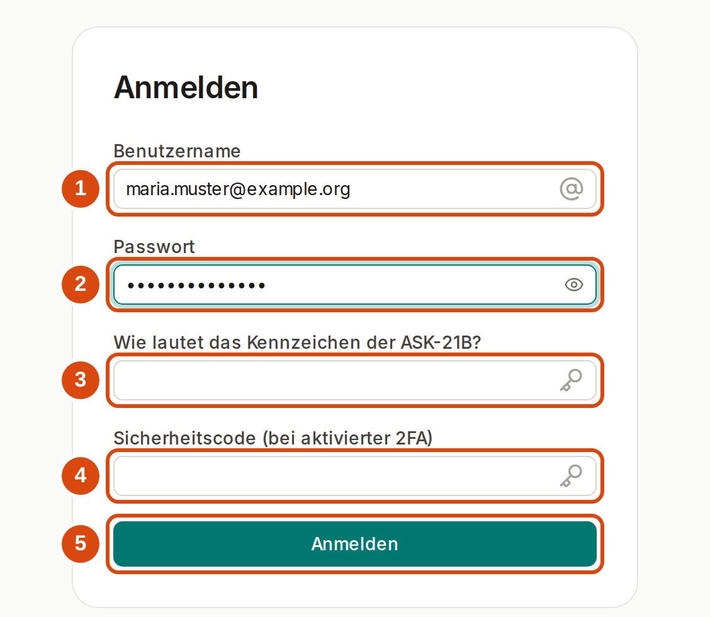
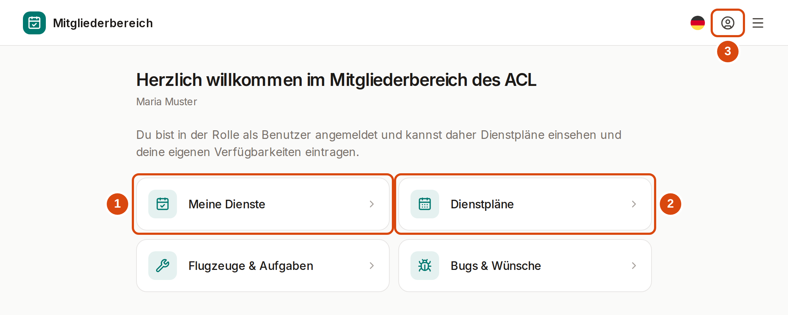
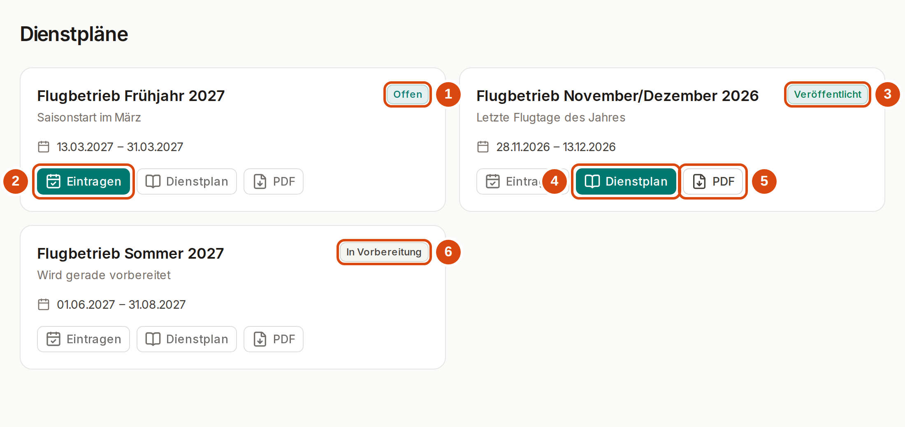
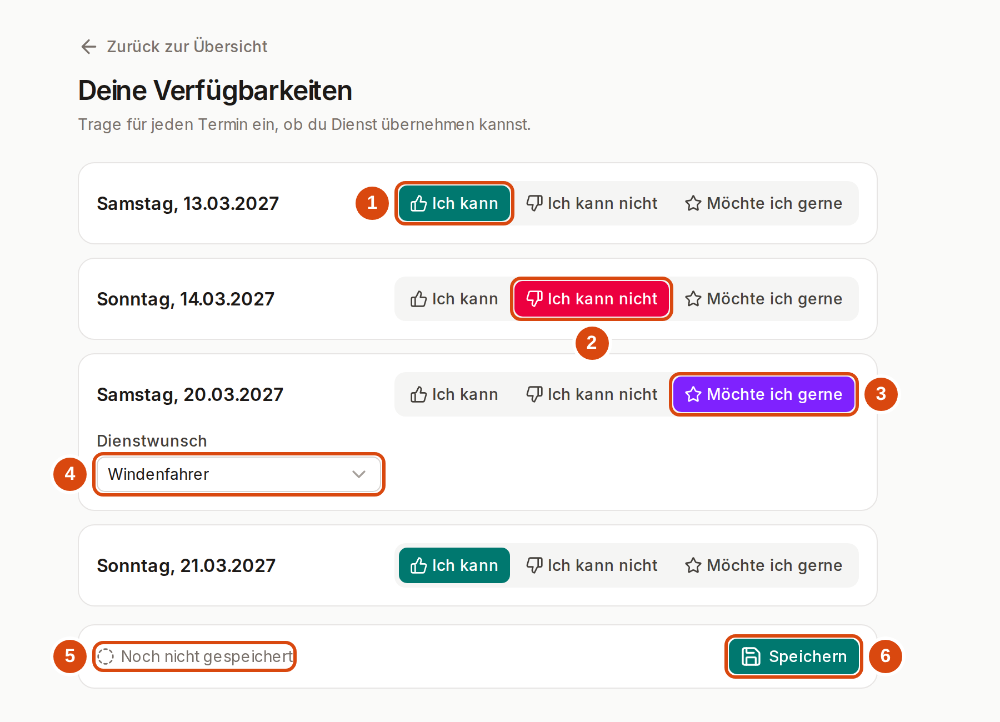
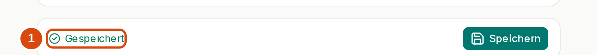
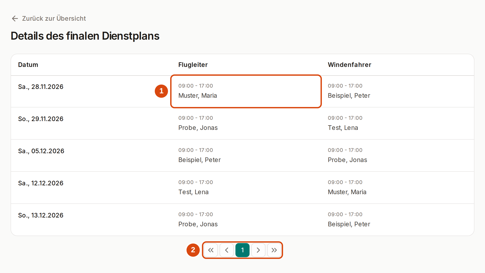
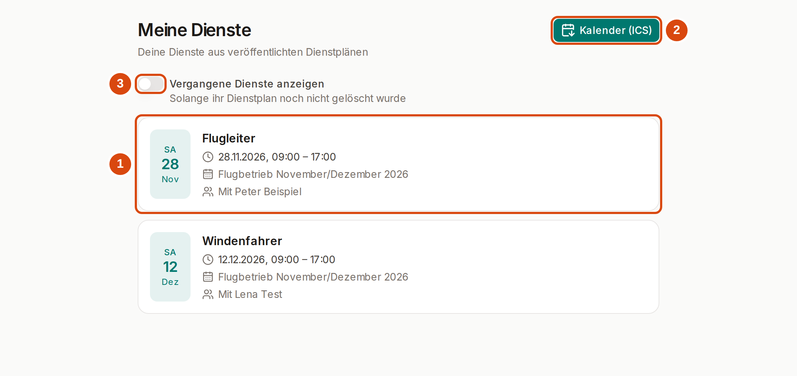
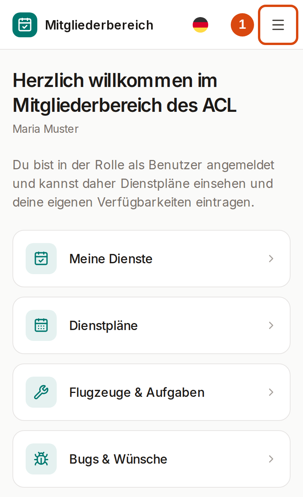
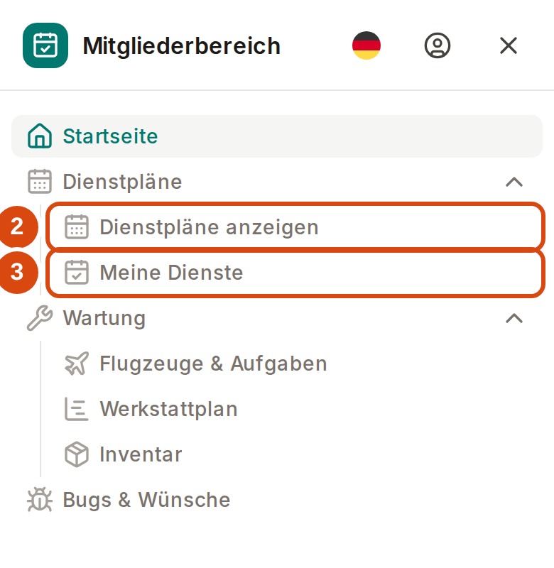
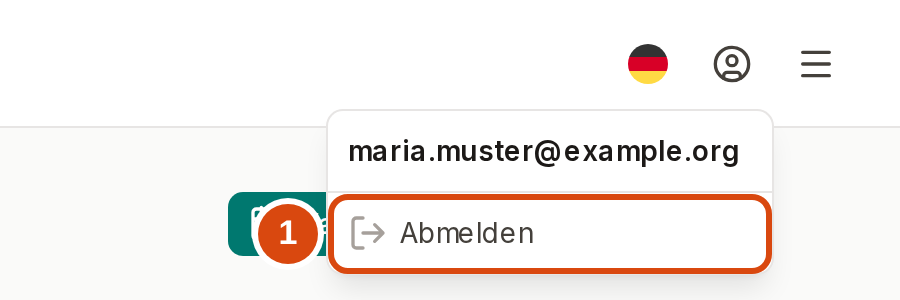

Eine einfache Anleitung für Mitglieder des
Aero-Club Langenselbold
In den Bildern sind wichtige Stellen orange umrahmt und mit einer Zahl versehen, zum Beispiel 1. Im Text darunter steht, was du an dieser Stelle tun musst. Die Namen und Daten in den Bildern sind nur Beispiele.
Du meldest dich mit deinen Zugangsdaten von Vereinsflieger an. Ein eigenes Konto für den Dienstplan brauchst du nicht – beim ersten Anmelden wird es automatisch angelegt.
Öffne die Internetadresse des Mitgliederbereichs. Diese Seite erscheint:

Benutzername: Tippe deine E-Mail-Adresse von Vereinsflieger ein.
Passwort: Tippe dein Passwort von Vereinsflieger ein. Mit dem Auge-Symbol rechts im Feld siehst du, was du getippt hast.
Sicherheitsfrage: Über dem Feld steht eine Frage. Tippe die Antwort ein. Die Antwort ist für alle Mitglieder gleich und du erfährst sie vom Verein. Groß- oder Kleinschreibung ist egal.
Sicherheitscode: Dieses Feld brauchst du nur, wenn du bei Vereinsflieger die Zwei-Faktor-Anmeldung eingeschaltet hast. Sonst lässt du es leer.
Klicke auf Anmelden. Danach siehst du die Startseite.
Dein Browser merkt sich die Anmeldung. Wenn du die Seite später wieder öffnest, bist du oft noch angemeldet und landest direkt auf der Startseite.
Passwort vergessen? Dann wende dich bitte an den Dienstplan-Verantwortlichen.
Nach dem Anmelden begrüßt dich die Startseite mit deinem Namen. Von hier aus erreichst du alles mit einem Klick auf eine der Kacheln.

Meine Dienste zeigt dir, wann du eingeteilt bist (siehe Schritt 6).
Dienstpläne zeigt alle Dienstpläne. Hier trägst du ein, wann du kannst (siehe Schritte 3 und 4).
Das Personen-Symbol oben rechts brauchst du zum Abmelden (siehe Schritt 8).
Wenn du dich einmal „verlaufen“ hast: Klicke oben links auf Mitgliederbereich. Dann bist du wieder auf der Startseite.
Auf der Seite „Dienstpläne“ steht jeder Dienstplan in einem eigenen Kasten. Oben rechts im Kasten siehst du, in welchem Zustand der Plan gerade ist.

Offen – Der Verein sammelt gerade, wer wann kann. Jetzt bist du gefragt.
Mit Eintragen sagst du, an welchen Tagen du kannst (siehe Schritt 4).
Veröffentlicht – Der Plan ist fertig. Eintragen geht nicht mehr.
Mit Dienstplan siehst du, wer an welchem Tag welchen Dienst hat (siehe Schritt 5).
Mit PDF lädst du den fertigen Plan als Datei herunter, zum Beispiel zum Ausdrucken.
In Vorbereitung – Der Verein bereitet den Plan noch vor. Hier musst du noch nichts tun.
Graue Knöpfe lassen sich gerade nicht anklicken. Das ist kein Fehler – der Knopf passt nur nicht zum Zustand des Plans.
Nach dem Klick auf Eintragen siehst du alle Tage des Dienstplans untereinander. Bei jedem Tag wählst du eine von drei Möglichkeiten.

Ich kann – An diesem Tag kannst du Dienst machen.
Ich kann nicht – An diesem Tag hast du keine Zeit.
Möchte ich gerne – An diesem Tag möchtest du besonders gerne Dienst machen.
Bei „Möchte ich gerne“ erscheint das Feld Dienstwunsch. Klicke darauf und wähle, welchen Dienst du an diesem Tag gerne hättest.
Hier steht „Noch nicht gespeichert“, solange deine Auswahl noch nicht beim Verein angekommen ist.
Klicke zum Schluss auf Speichern. Das ist der wichtigste Schritt!
Nach dem Speichern steht unten „Gespeichert“ mit einem grünen Haken 1. Jetzt hat der Verein deine Angaben.

Sobald der Verein den Plan veröffentlicht hat, klickst du in der Übersicht auf Dienstplan. Du siehst eine Tabelle: in jeder Zeile ein Tag, in jeder Spalte ein Dienst.

In jedem Feld stehen die Uhrzeit und der Name der eingeteilten Person. Suche nach deinem Namen (Nachname, Vorname).
Die Tabelle zeigt immer nur einige Tage auf einmal. Mit den Pfeilen unter der Tabelle blätterst du weiter.
Du musst nicht selbst suchen: Unter „Meine Dienste“ stehen nur deine eigenen Termine (nächster Schritt).
„Meine Dienste“ ist die bequemste Seite: Hier stehen alle deine kommenden Dienste aus veröffentlichten Plänen – mit Datum, Uhrzeit und wer mit dir zusammen Dienst hat.

Ein Kasten ist ein Dienst: links der Tag, rechts der Dienst, die Uhrzeit, der Name des Plans und mit wem du eingeteilt bist.
Kalender (ICS) lädt eine Datei mit all deinen Diensten herunter. Öffnest du diese Datei, werden die Termine in den Kalender deines Handys oder Computers übernommen. So wirst du von deinem Kalender an den Dienst erinnert.
Mit dem Schalter Vergangene Dienste anzeigen siehst du auch Dienste, die schon vorbei sind.
Nach dem Herunterladen erscheint die Datei meist unten oder oben im Browser oder im Ordner „Downloads“. Tippe bzw. klicke sie an und bestätige „Hinzufügen“ oder „Importieren“. Ändert sich der Plan später, lade die Datei einfach erneut herunter.
Auf dem Handy sieht alles etwas schmaler aus, funktioniert aber genauso. Nur das Menü ist versteckt.


Tippe oben rechts auf die drei Striche. Das Menü öffnet sich.
Dienstpläne anzeigen führt zur Übersicht der Dienstpläne (Schritt 3).
Meine Dienste führt zu deinen eigenen Terminen (Schritt 6).
Mit dem X oben rechts schließt du das Menü wieder.
Wenn du an einem fremden oder gemeinsam genutzten Computer warst (zum Beispiel im Vereinsheim), melde dich bitte am Ende ab.

Klicke oben rechts auf das Personen-Symbol. Es öffnet sich ein kleines Menü mit deiner E-Mail-Adresse. Klicke dort auf Abmelden.
Entweder ist der Plan schon Veröffentlicht – dann kann nichts mehr eingetragen werden – oder er ist noch In Vorbereitung. Frage im Zweifel beim Verein nach.
Schau unter Meine Dienste. Steht dort nichts, bist du in den veröffentlichten Plänen nicht eingeteilt. Wenn du meinst, das stimmt nicht, melde dich beim Dienstplan-Verantwortlichen: Deine E-Mail-Adresse von Vereinsflieger muss die sein, die im Dienstplan für dich hinterlegt ist.
Kein Problem, solange der Plan noch „Offen“ ist: Klicke erneut auf Eintragen, wähle deine Tage noch einmal und klicke auf Speichern.
Lade die Seite neu (am Computer die Taste F5, am Handy die Seite nach unten ziehen). Hilft das nicht, melde dich ab und wieder an.